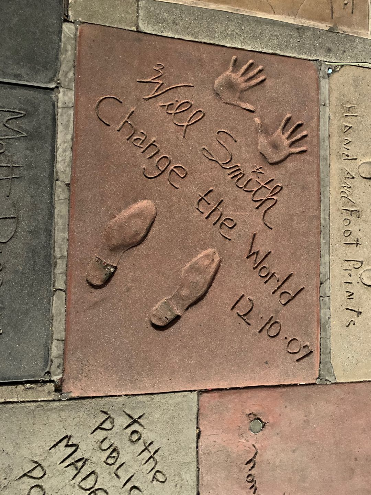
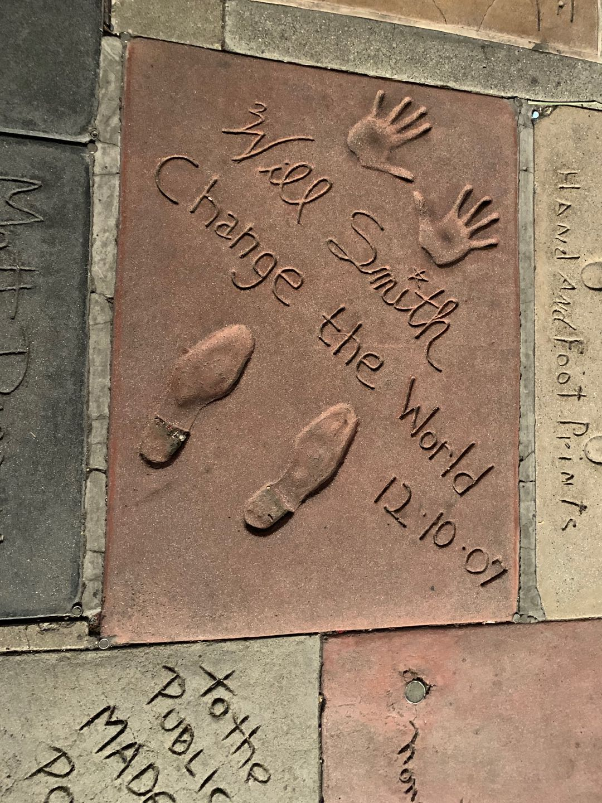

California

Universal studios Hollywood is one of the oldest and most famous Hollywood film studios still in use. It was initially created to offer tours of the real Universal Studios sets and is the first of many full-fledged Universal Studios Theme Parks located across the world. As of 2019, Universal Studios Hollywood contains 9 rides, 7 shows, and a large outdoor play area. Each lot features a collection of rides, shows and attractions as well as food, beverage, and merchandise shops.
 

The world-famous Hollywood Walk of Fame features more than 2,500 terrazzo and brass stars embedded in the sidewalk along 15 blocks of Hollywood Boulevard and three blocks of Vine Street. The five-pointed stars honor the accomplishments of actors, musicians, directors, producers and others in the entertainment industry.
The Hollywood sign may be unique among American icons. It is a landmark whose white block letters are familiar around the world as the prime symbol of the movies. Day after day tourists with cameras wander into surrounding Griffith Park or troll up and down the streets of the Hollywood Hills, looking to position themselves for the best possible angle on the sign. More than any other sight in Los Angeles, the Hollywood sign in the background of your photo proves you were really there.

The Broad is an inaugural installation featuring more than 250 masterworks of contemporary art, a distinctive new architectural landmark in downtown Los Angeles. For the inaugural exhibition, Joanne Heyler has selected more than 250 works by some 60 artists to present a sweeping, chronological journey through the Broad collection.